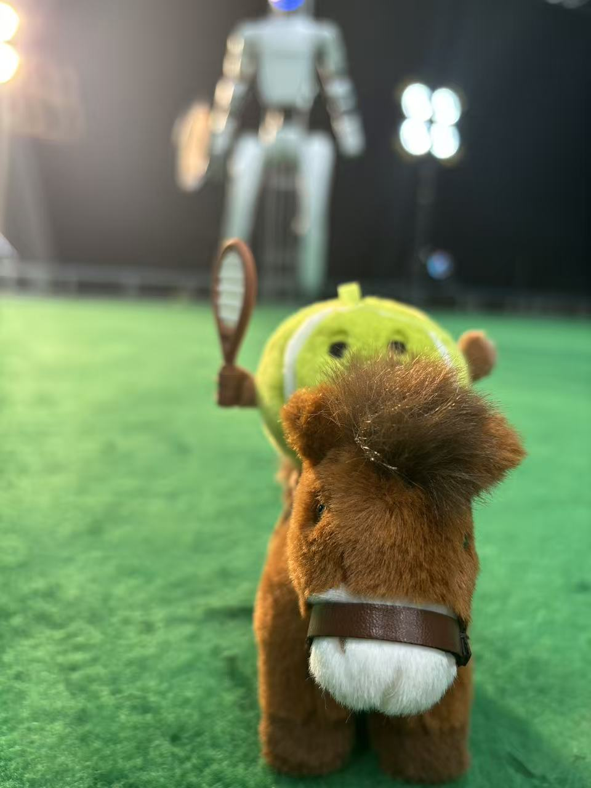
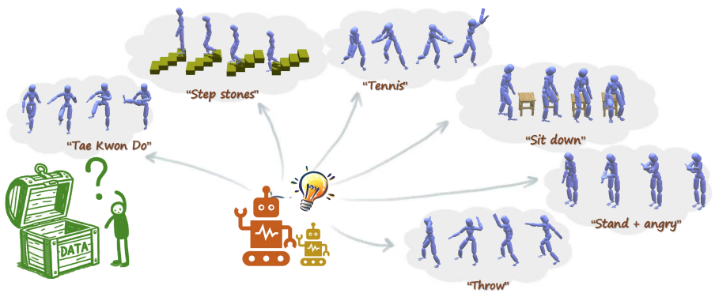
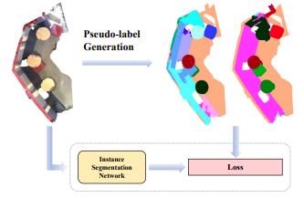

|
Zhikai Zhang | 张 智 楷 I am a second-year Ph.D. student in the IIIS at Tsinghua University,
advised by Prof. Li Yi.
|
 |
{kind=link}
News
|
Open-source projectsI maintain several open-source projects based on our research works. Feel free to use them and we welcome any feedback from the community.
|
Research |
|
|
Learning Athletic Humanoid Tennis Skills from Imperfect Human Motion Data
Zhikai Zhang*, Haofei Lu*, Yunrui Lian*, Ziqing Chen, Yun Liu, Chenghuai Lin, Han Xue, Zicheng Zeng, Zekun Qi, Shaolin Zheng, Qing Luan, Jingbo Wang, Junliang Xing, He Wang, Li Yi arxiv, 2026 project page / arXiv / code 
We present LATENT, a framework to learn athletic humanoid tennis skills from imperfect human motion data. The method can be potentially adopted to many other athletic skills. |
|
|
Collision-Free Humanoid Traversal in Cluttered Indoor Scenes
Han Xue*, Sikai Liang*, Zhikai Zhang*, Zicheng Zeng, Yun Liu, Yunrui Lian, Jilong Wang, Qingtao Liu, Xuesong Shi, Li Yi arxiv, 2026 project page / arXiv / code 
We propose Humanoid Potential Field (HumanoidPF) for collision-free traversal in cluttered indoor scenes. |
|
|
Track Any Motions under Any Disturbances
Zhikai Zhang*, Jun Guo*, Chao Chen, Jilong Wang, Chenghuai Lin, Yunrui Lian, Han Xue, Zhenrong Wang, Maoqi Liu, Jiangran Lyu, Huaping Liu, He Wang, Li Yi ICRA, 2026 project page / arXiv / code (OpenTrack) 
We present Any2Track, a foundational humanoid motion tracker to track any motions under any disturbances. |
|
|
Unleashing Humanoid Reaching Potential via Real-world-Ready Skill Space
Zhikai Zhang*, Chao Chen*, Han Xue*, Jilong Wang, Sikai Liang, Zongzhang Zhang, He Wang, Li Yi RA-L, 2025 LEAP Workshop @ CoRL, 2025 (Spotlight) project page / arXiv / code (OpenWBT) 
We present Real-world-Ready Skill Space (R2S2), a skill space that encompasses and encodes various real-world-ready motor skills. |
|
 |
FreeMotion: MoCap-Free Human Motion Synthesis with Multimodal Large Language Models
Zhikai Zhang, Yitang Li, Haofeng Huang, Mingxian Lin, Li Yi ECCV, 2024 project page / arXiv Our method explores open-set human motion synthesis using natural language instructions without any motion data. |
|
 |
FreePoint: Unsupervised Point Cloud Instance Segmentation
Zhikai Zhang, Jian Ding, Li Jiang, Dengxin Dai, Guisong Xia CVPR, 2024 paper / arXiv / code Our method explores unsupervised point cloud instance segmentation. |
Template stolen from Jon Barron.
Last updated: October, 2025